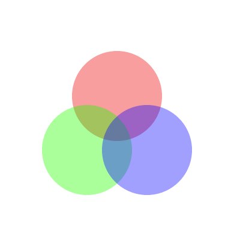

00 — Getting Started: How Computer Graphics Work
Transparency: the alpha channel
Every colour function so far has taken three numbers — but p5 accepts an optional fourth number, called alpha, which controls transparency rather than colour:
fill(255, 0, 100, 255); // fully opaque pink — completely hides whatever is underneath
fill(255, 0, 100, 150); // partly see-through pink — blends with whatever is underneath
fill(255, 0, 100, 0); // fully transparent — invisible; draws nothing at allAlpha only matters because the canvas is a persistent bitmap (see "The canvas" above): drawing a semi-transparent shape doesn't replace the pixels underneath, it blends with whatever colour is already there. Draw the same semi-transparent shape twice in the same spot and the two layers combine, giving a different, more opaque-looking result than either layer alone — a direct consequence of drawing being a blend operation, not a replace operation, whenever alpha is less than fully opaque.

Figure: three overlapping semi-transparent circles (red, green, blue, each drawn with a reduced alpha), showing how their overlaps blend into new colours rather than simply covering each other up.